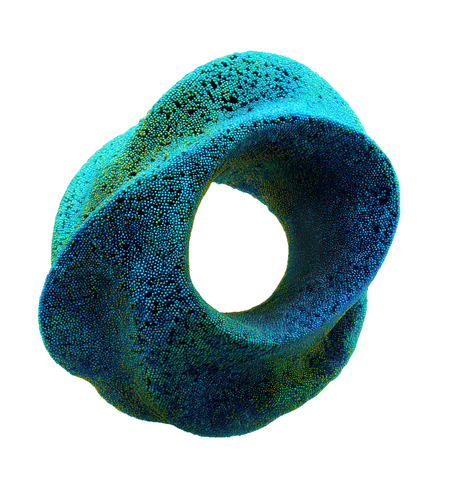

THE ROADMAP // 100-DAY PROOF OF VALUE
EXECUTIVE EXECUTION MODEL
100 Days to Proof of Value.
Building an agentic workforce to automate workflows.
Solving specific operational bottlenecks on your historical data—proving measurable value and mathematical accuracy in 100 days before scaling across the enterprise.
VALUE REALIZATION TRAJECTORY // FROM DISCOVERY TO ENTERPRISE SCALE
Weeks 1–6 Prioritize
Day 100 Proof of Value
Beyond Day 100 Scale
PHASE 01 // WEEKS 01–06
Prioritized Workflows
- Nominate initial domain leads and critical workflows
- Identify tasks with high operational friction, delay, or risk
- Integrate with existing workflows
OUTPUT: Prioritized Personas & Workflows
PHASE 02 // DAY 100 MILESTONE
Co-Develop & Prove Value
- Co-develop targeted agents alongside your domain specialists
- Validate mathematical accuracy against real historical data
- Quantify Agent ROI before enterprise rollout
OUTPUT: Proven Value of an Agentic Workforce
PHASE 03 // BEYOND DAY 100
Scale the Agentic Workforce
- Expand proven agents across relevant teams and departments
- Automate connected operational workflows 24/7
- Manage and govern agentic workforce
OUTPUT: Enterprise-Wide Automation